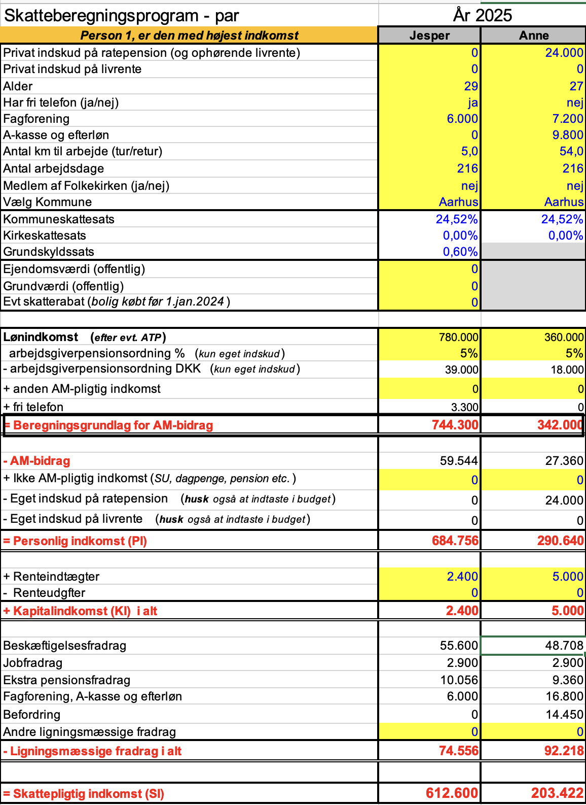
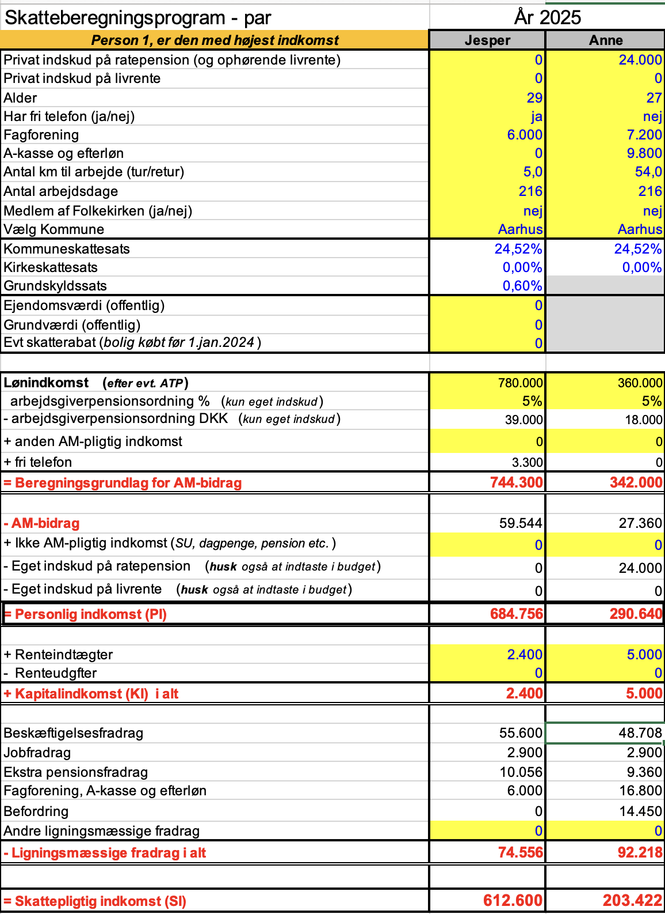
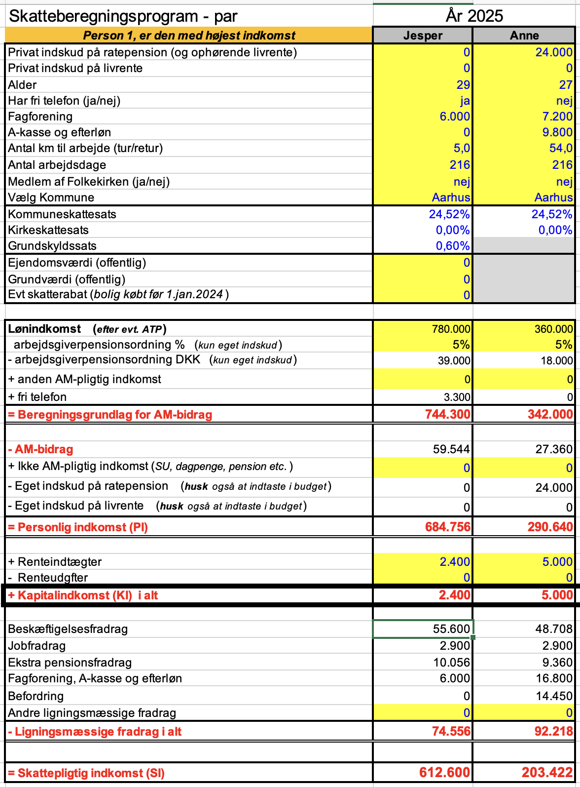
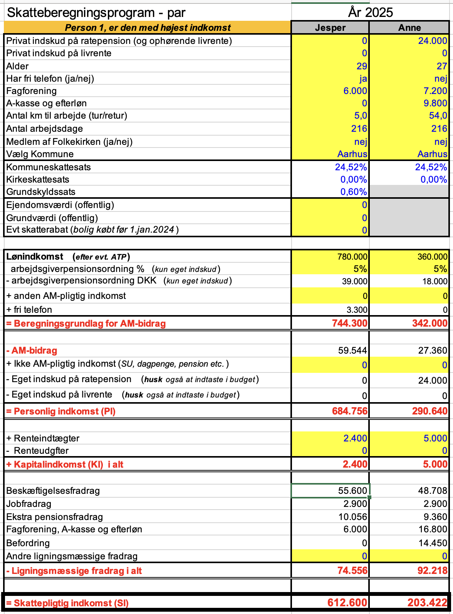
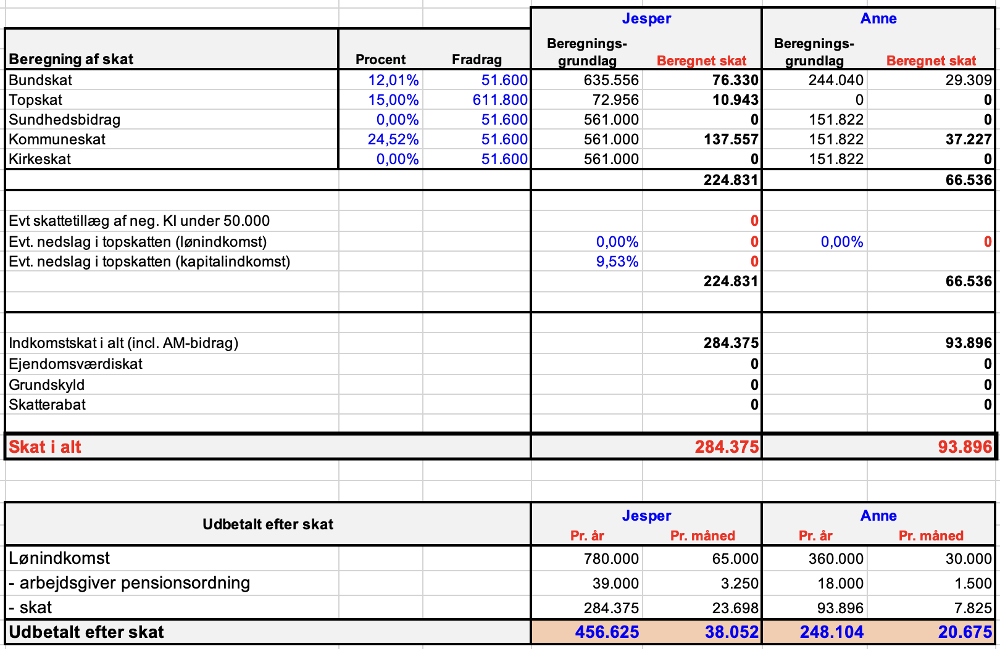
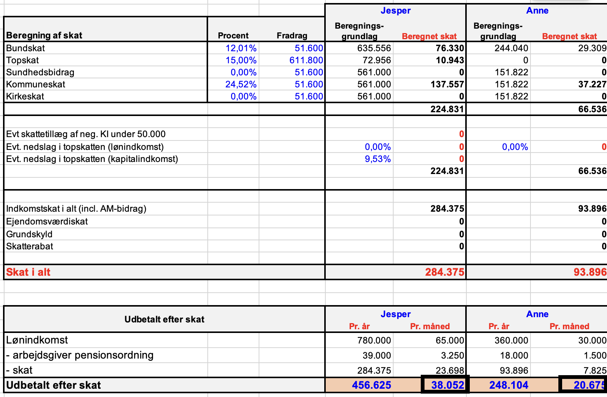
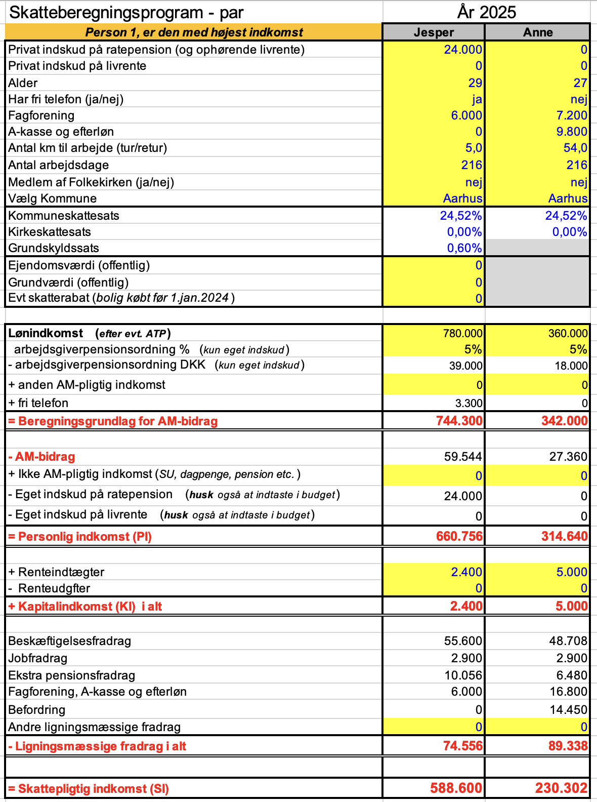
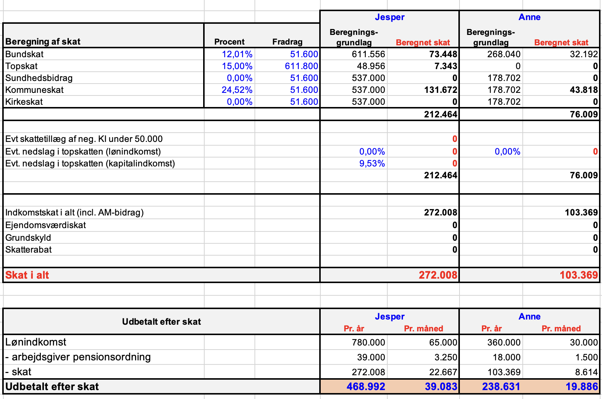
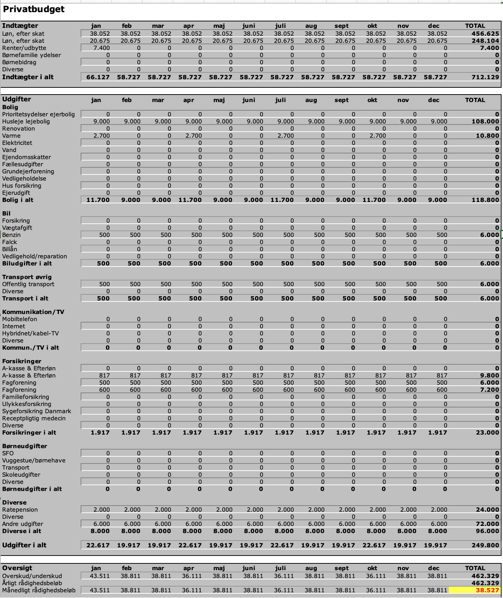
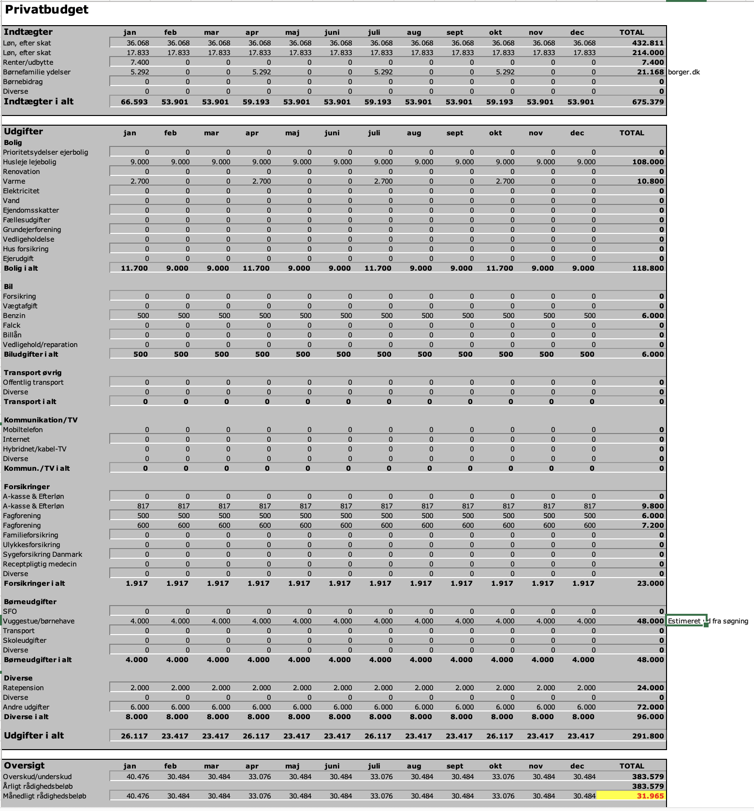

Temaprojekt 2 uge 3
Løsningsforslag
Formål:
Formålet med temaprojektet er at give dig kompetence i at bruge, hvad ud har lært i
denne uge, i praksis.
Beskrivelse:
I skal læse introen til temaprojektet herunder, før I går i gang med opgaverne.
OLA 2 Intro
Jesper og Anne
Case: Jesper og Anne privatkunde-rådgivning
Anne og Jesper har kendt hinanden i nogle år og blev for to år siden gift på rådhuset
(de er ikke medlem af folkekirken).
-
De bor i en treværelses lejet lejlighed i centrum af Århus.
-
De har endnu ingen børn, men Anne er gravid i 4. måned.
-
Anne er 27 år og har de seneste tre år arbejdet som fuldmægtig i Skanderborg
kommune.
-
Jesper er 29 år og arbejder som ingeniør. Han er leder for et team der udvikler ny
solcelle teknologi i et firma, som ligger 10 minutter på cykel fra deres lejlighed.
-
Jesper har i år en månedsløn på 65.000 kr. med tilhørende arbejdspension (5 pct.
egenbetaling).
-
Jespers arbejdsgiver betaler mobiltelefon.
-
Jesper er medlem af IDA (fagforening) – koster 1.500 kr. i kvartalet, men ikke
medlem af en A-kasse.
-
Jesper vil have 216 arbejdsdage i år
-
Anne forventer at have en lønindkomst på 30.000 kr. pr. måned i år. med tilhørende
arbejdspension (5 pct. egenbetaling).
-
Hun har 27 km til arbejde - altså 54 km i alt pr. dag. Nogle gange tager hun deres
gamle Opel, andre gange tager hun toget (og før hun blev gravid cyklede hun også
nogle gange).
-
Anne vil have 216 arbejdsdage.
-
Anne er medlem i fagforeningen HK, A-kasse og hun indbetaler også til
efterlønsordningen.
-
Fagforeningen koster 1.800 kr. i kvartalet og A-kasse+efterløn 2.450 kr. pr.
kvartal.
-
Anne har de sidste år indbetalt 24.000 kr. på en privat tegnet ratepension og det
forventer hun også at gøre i år.
-
Både Anne og Jesper har sparet lidt op i banken.
Anne forventes at få 5.000 kr. i renteindtægter i år og Jesper 2.400 kr. (de har en
hemmelig drøm om villa, Volvo og vovse + barn inden for overskuelig tid og sparer
derfor løbende op hver måned)
-
Leje af lejlighed koster 9.000 kr. om måneden
-
El, vand og varme aconto beløber sig til 2.700 kr. i kvartalet
-
Andre fasteudgifter bliver 6.000 kr. om måneden
Afsender:
Du er privatkunde-rådgiver
Modtager:
Jesper og Anne
Du kan i denne opgave benytte følgende materialer:
Kapitel 1 - Skattesystemet 2026
Skatteberegner (skat.tepedu.dk)
Opgave
Løsningsforslag
Bemærk Excel løsningsforslaget i skatteskabelonen ligger nederst i løsningsforslaget
Besvar nedenstående spørgsmål vha. skatteskabelonen.
Hvis der er manglende oplysninger, forsøg da bedst muligt at opstille budgettet bedst muligt
inden kundemødet.
-
Beregn Anne og Jespers beregningsgrundlag for arbejdsmarkedsbidrag?
Løsningsforslag:

Anne og Jespers beregningsgrundlag for arbejdsmarkedsbidrag bliver hhv. 342.000,-
kr. og 744.300,- kr.
-
Beregn Anne og Jespers personlige indkomst?
Løsningsforslag:

Anne og Jespers personlige indkomst bliver hhv. 290.640,- kr. og 684.756,- kr.
-
Beregn Anne og Jespers kapitalindkomst?
Løsningsforslag:

Anne og Jespers kapitalindkomst bliver hhv. 5.000,- kr. og 2.400,- kr.
-
Beregn Anne og Jespers skattepligtige indkomst?
Løsningsforslag:

Anne og Jespers skattepligtige indkomst bliver hhv. 203.422,- kr. og 612.600,- kr.
-
Beregn skatten for Anne og Jesper?
Løsningsforslag:

Anne og Jespers skat bliver hhv. 93.896,- kr. og 284.375,- kr.
-
Hvad har Anne og Jesper tilsammen udbetalt om måneden efter skat?
Løsningsforslag:

Anne og Jespers har tilsammen udbetalt 58.727,- kr pr. måned.
-
Hvorfor har Anne og Jesper forskelligt beskæftigelsesfradag?
Løsningsforslag:
Anne tjener mindre end Jesper, der tjener så meget at han rammer det maksimale
beskæftigelsesfradag som i 2026 er 63.300,-.
-
Hvilket beregningsgrundlag betaler man kommune- og kirkeskat af?
Løsningsforslag:
Kommuneskat og kirkeskat beregnes på baggrund af din skattepligtige indkomst. Bemærk
Anne og Jeser er ikke medlemmer af folkekirken og betaler således ikke kirkeskat.
-
Hvilket beregningsgrundlag betaler man bundskat af?
Løsningsforslag:
Bundskatten i Danmark beregnes ud fra din personlige indkomst med tillæg af positiv
nettokapitalindkomst.
-
Hvilket beregningsgrundlag betaler man topskat af?
Løsningsforslag:
Topskatten i Danmark beregnes ligesom bundskatten ud fra din personlige indkomst med
tillæg af positiv nettokapitalindkomst. Personer med høj kapitalindkomst betaler
således både bund- og topskat af denne.
-
Hvor meget betaler man i arbejdsmarkedsbidrag og hvad er
beregningsgrundlaget?
Løsningsforslag:
Man betaler 8% i arbejdsmarkedsbidrag, beregningsgrundlaget er brutto lønindkomsten
plus personalegoder som fri telefon eller bil.
-
Er der en maksimal fradragsgrænse for ratepension?
Løsningsforslag:
Ja 65.500 kr. (2025) forventes at stige yderligere i (2026) ifm. skattereform.
-
Hvor foretages fradraget af ratepension?
Løsningsforslag:
Fradraget for ratepensionsindbetalinger sker i den personlige indkomst,
hvilket betyder, at det reducerer grundlaget for beregning af både kommuneskat,
bund- og eventuel topskat.
-
Kunne Anne og Jesper optimere deres fradrag, ved at ændre i deres
pensionsopsparing?
Løsningsforslag:
Ja hvis Jesper indbetaler 24.000,- på ratepension i stedet for Anne, får de fradrag
i Jespers topskat.
Udbetalt om året før omlægning:
456.625 + 248.104 = 704.729
Udbetalt om året efter omlægning:
468.992 + 238.631 = 707.623
Se nedenstående skatteskabelon hvor indbetalingen til ratepension er flytte til
Jesper:


-
Beregn Anne og Jespers rådighedsbeløb pr. måned før de har fået deres ønskebarn.
(Vink: Benyt skatteskabelonens budget ark)
Løsningsforslag:
Her er benyttet skatteskabelonens budget ark, Anne's forbrug af benzin og offentlig
transport er estimeret, da vi ikke har oplysninger om dette.
De har et rådighedsbeløb på 38.537,- hvilket overstiger det anbefalede beløb på
11.400,- for par.

-
Hvad er rådighedsbeløbet når de har fået et barn?
(antag at begge beholder deres nuværende jobs)
Løsningsforslag:
Her er benyttet skatteskabelonens budget ark, der er nu tilføjet Børnefamilie
ydelser og vuggestue i budgettet.
De har et rådighedsbeløb på 31.965,- hvilket overstiger det anbefalede beløb på
11.400,- + 3.000,- 14.400,- for et par med et barn.

-
Anne og Jesper ønsker at købe et hus på sigt, da de ikke kan se sig selv som familie
med barn i en lejlighed.
Hvor meget kan deres samlede udgifter til et hus blive?
(Vink: Benyt Rådighedsbeløb i dag, beregn deres nye rådighedsbeløb uden
nuværende boligudgifter, de får jo nu i stedet et hus og fratræk anbefalet beløb
til familien, for at finde hvad udgifterne til nyt hus maksimalt må
være)
Løsningsforslag:
|
Udregning af maksimale udgifter til bolig:
|
|
Rådighedsbeløb i dag
|
31.965
|
|
+ boligudgifter i dag
|
9,900,-
|
|
= Rådighedsbeløb før boligudgifter
|
41.865
|
|
- krav til rådighedsbeløb
|
14.400
|
|
= Maksimale boligudgifter til hus
|
27.465
|
Jesper og Anne kan således købe et hus hvor de samlede boligudgifter beløber sig til
27.465,-,
de vil dog så opleve et voldsomt fald i deres rådighedsbeløb, hvilket man bør
inddrage i rådgivningen.
-
Anne overvejer at gå ned i tid, nu arbejder hun 37 timer pr. uge, hvor meget mindre
får hun cirka udbetalt pr time hun går ned i tid?
(Vink: Anne betaler ikke topskat så regn med hun har en marginalskatteprocent
på 42%. Når hun arbejder 37 timer om ugen, svarer det til cirka 160 timer pr.
måned
Hvis en marginalskat angives til 42 %, betyder det normalt, at skatten på den
sidst tjente krone (efter AM-bidrag) er 42 %. For at finde den reelle
marginalskat inkl. AM-bidraget, kan du beregne:
1 - (1 - 0,08) * (1 - 0,42) = 46,64%
Så den effektive marginalskat ville i dette tilfælde være 46,64%, når
AM-bidraget tages i betragtning.
Bemærk: udregn blot det omtrentlige beløb,
vi udregner ikke det præcise beløb i skatteskabelonen)
Løsningsforslag:
|
Udregning af udbetalt beløb pr. time
|
|
Alt andet er månedslønnen pr. time (30.000/160):
|
187,50 kr.
|
|
Skat 46,64% af 187,5
|
87,22
|
|
Mindre beløb udbetalt pr. time 187,5 - 87,22
|
100,28
|
Hvis man skal lave en "helt rigtig" beregning skal man ind i skatteberegningen
og lægge nye antagelser ind og dermed også tage højde for det præcise
beskæftigelsesfradrag og den eksakte kommuneskat etc.
Udregning for Anne og Jesper i Skatteskabelonen
Anne og Jesper Skatteskabelonen